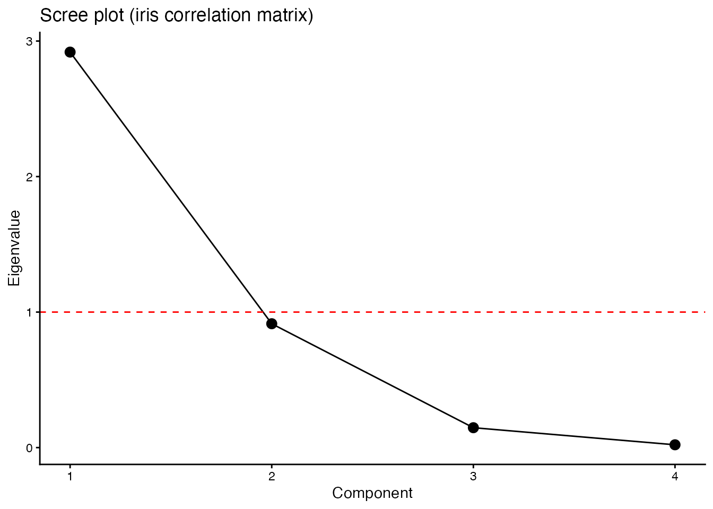

pacman::p_load(tidyverse)13 Foundations of Linear Algebra
The chapters on multivariate analysis (Chapters 14 and 15) cover factor analysis, principal-components analysis, multidimensional scaling, cluster analysis, and other techniques. Their common mathematical foundation is linear algebra — the calculus of vectors and matrices. Statistical packages deliver results instantly, but without the underlying picture it is hard to interpret those results correctly or judge their plausibility.
The chief virtue of using matrices is that collections of many numbers can be written compactly and generically. Psychological data have the rectangular structure “\(n\) respondents \(\times\) \(m\) variables” — exactly a matrix. In matrix language, means and variances, regression estimation, and the principles of factor analysis are all expressible within one framework.
This chapter covers the basic operations on matrices and their use in R.
13.1 Scalars, vectors, matrices
13.1.1 Scalars
A single number — neither a vector nor a matrix — is a scalar. Everyday values like \(1, 2, 3.14\) are all scalars.
13.1.2 Vectors
A one-dimensional sequence of numbers is a vector. Written horizontally it is a row vector; written vertically it is a column vector.
\[ \text{row vector: } \boldsymbol{a} = \begin{pmatrix} 1 & 3 & 5 \end{pmatrix}, \quad \text{column vector: } \boldsymbol{b} = \begin{pmatrix} 2 \\ 4 \\ 6 \end{pmatrix} \]
\(\boldsymbol{a}\) is a \(1 \times 3\) row vector and \(\boldsymbol{b}\) is a \(3 \times 1\) column vector. Vectors and matrices are conventionally written in bold (\(\boldsymbol{A}\), \(\boldsymbol{x}\)).
R’s plain vector has no row/column distinction; matrix() makes the orientation explicit.
# plain R vector (no row/column)
a <- c(1, 3, 5)
a[1] 1 3 5# row vector (1x3 matrix)
matrix(a, nrow = 1) [,1] [,2] [,3]
[1,] 1 3 5# column vector (3x1 matrix)
matrix(a, ncol = 1) [,1]
[1,] 1
[2,] 3
[3,] 513.1.3 Matrices
A matrix is a rectangular array of numbers. The horizontal lines are rows and the vertical lines are columns.
\[ \boldsymbol{A} = \begin{pmatrix} a_{11} & a_{12} & \cdots & a_{1m} \\ a_{21} & a_{22} & \cdots & a_{2m} \\ \vdots & \vdots & \ddots & \vdots \\ a_{n1} & a_{n2} & \cdots & a_{nm} \end{pmatrix} \]
This is an \(n \times m\) matrix. Subscripts on \(a_{ij}\) are row-then-column. In a psychology data matrix, rows are typically respondents (cases) and columns are variables (items).
matrix() builds a matrix in R, filling in column-major order by default.
# column-major (default): column 1 first, then column 2, ...
A <- matrix(1:6, nrow = 2)
A [,1] [,2] [,3]
[1,] 1 3 5
[2,] 2 4 6# row-major: byrow = TRUE
B <- matrix(1:6, nrow = 2, byrow = TRUE)
B [,1] [,2] [,3]
[1,] 1 2 3
[2,] 4 5 6Index elements with [row, column].
A[2, 3] # element at row 2, column 3[1] 6A[1, ] # entire row 1 (as a vector)[1] 1 3 5A[, 2] # entire column 2 (as a vector)[1] 3 413.2 Special matrices
A few special forms appear repeatedly in data analysis.
Square matrix: equal numbers of rows and columns (\(n \times n\)).
Symmetric matrix: a square matrix with \(a_{ij} = a_{ji}\). The entries are mirrored about the main diagonal. Correlation matrices and variance–covariance matrices are the canonical examples.
For three variables \(x_1, x_2, x_3\), the correlation matrix has the form
\[ \boldsymbol{R} = \begin{pmatrix} 1 & r_{12} & r_{13} \\ r_{12} & 1 & r_{23} \\ r_{13} & r_{23} & 1 \end{pmatrix}. \]
The diagonal entries are 1 (self-correlations) and the off-diagonal entries are symmetric (\(r_{ij} = r_{ji}\)). A variance–covariance matrix similarly has variances on the diagonal and covariances off-diagonal.
\[ \boldsymbol{S} = \begin{pmatrix} s_1^2 & s_{12} & s_{13} \\ s_{12} & s_2^2 & s_{23} \\ s_{13} & s_{23} & s_3^2 \end{pmatrix} \]
Diagonal matrix: a square matrix whose off-diagonal entries are all zero. The identity matrix \(\boldsymbol{I}\) — the diagonal matrix with 1s on the diagonal — is the matrix analogue of the scalar 1: multiplying any matrix by \(\boldsymbol{I}\) leaves it unchanged.
# 3x3 identity
diag(3) [,1] [,2] [,3]
[1,] 1 0 0
[2,] 0 1 0
[3,] 0 0 1# diagonal matrix from a vector
diag(c(2, 5, 3)) [,1] [,2] [,3]
[1,] 2 0 0
[2,] 0 5 0
[3,] 0 0 3# extract diagonal entries from a matrix
M <- matrix(1:9, nrow = 3)
diag(M)[1] 1 5 9diag() is overloaded: a scalar argument builds the identity, a vector builds a diagonal matrix, and a matrix returns its diagonal.
13.3 Matrix operations
13.3.1 Addition and subtraction
Addition and subtraction work elementwise. Both operands must have the same shape.
\[ \begin{pmatrix} 1 & 2 \\ 3 & 4 \end{pmatrix} + \begin{pmatrix} 5 & 6 \\ 7 & 8 \end{pmatrix} = \begin{pmatrix} 6 & 8 \\ 10 & 12 \end{pmatrix} \]
A <- matrix(c(1, 3, 2, 4), nrow = 2)
B <- matrix(c(5, 7, 6, 8), nrow = 2)
A + B [,1] [,2]
[1,] 6 8
[2,] 10 12A - B [,1] [,2]
[1,] -4 -4
[2,] -4 -413.3.2 Scalar multiplication
Multiplying a matrix by a scalar multiplies every entry by that scalar.
2 * A [,1] [,2]
[1,] 2 4
[2,] 6 813.3.3 Matrix multiplication
Matrix multiplication is not entry-by-entry: it involves multiply-then-sum. Start with a row vector times a column vector (a dot product):
\[ \begin{pmatrix} 1 & 2 & 1 \end{pmatrix} \begin{pmatrix} 3 \\ 4 \\ 2 \end{pmatrix} = 1 \times 3 + 2 \times 4 + 1 \times 2 = 13 \]
It is “multiplication,” but it involves addition — a hallmark of matrix arithmetic.
The product of an \(n \times m\) matrix \(\boldsymbol{A}\) and an \(m \times l\) matrix \(\boldsymbol{B}\) is an \(n \times l\) matrix. The number of columns of the left operand must equal the number of rows of the right operand, or the product is undefined. The \((i, j)\) entry of the result is the dot product of \(\boldsymbol{A}\)’s row \(i\) with \(\boldsymbol{B}\)’s column \(j\).
\[ \begin{pmatrix} 1 & 2 \\ 3 & 4 \end{pmatrix} \begin{pmatrix} 2 \\ 1 \end{pmatrix} = \begin{pmatrix} 1 \times 2 + 2 \times 1 \\ 3 \times 2 + 4 \times 1 \end{pmatrix} = \begin{pmatrix} 4 \\ 10 \end{pmatrix} \]
Unlike scalar multiplication, matrix multiplication is not commutative: in general \(\boldsymbol{AB} \neq \boldsymbol{BA}\). In R, %*% is matrix multiplication; * is elementwise multiplication. The distinction matters.
A <- matrix(c(1, 3, 2, 4), nrow = 2)
b <- c(2, 1)
# matrix product (%*%)
A %*% b [,1]
[1,] 4
[2,] 10# elementwise product (*) -- not the same as a matrix product
A * b [,1] [,2]
[1,] 2 4
[2,] 3 4* simply recycles b across the rows; this is not a matrix product.
13.3.4 Transpose
The transpose of a matrix swaps its rows and columns, written \(\boldsymbol{A}'\) or \(\boldsymbol{A}^T\).
\[ \boldsymbol{A} = \begin{pmatrix} 1 & 2 & 3 \\ 4 & 5 & 6 \end{pmatrix} \quad \Rightarrow \quad \boldsymbol{A}' = \begin{pmatrix} 1 & 4 \\ 2 & 5 \\ 3 & 6 \end{pmatrix} \]
A \(2 \times 3\) matrix becomes a \(3 \times 2\) matrix after transposition. Symmetric matrices are invariant under transposition (\(\boldsymbol{A}' = \boldsymbol{A}\)).
A <- matrix(1:6, nrow = 2)
A [,1] [,2] [,3]
[1,] 1 3 5
[2,] 2 4 6t(A) [,1] [,2]
[1,] 1 2
[2,] 3 4
[3,] 5 6Among the useful identities, note especially that \((\boldsymbol{AB})' = \boldsymbol{B}'\boldsymbol{A}'\) — the order is reversed.
13.3.5 Inverse
The inverse matrix is the matrix analogue of division. For a square matrix \(\boldsymbol{A}\), the inverse \(\boldsymbol{A}^{-1}\) is defined by \(\boldsymbol{A}\boldsymbol{A}^{-1} = \boldsymbol{I}\), mirroring the scalar identity “multiplying by the reciprocal gives 1.”
For a \(2 \times 2\) matrix the inverse is given by
\[ \boldsymbol{A} = \begin{pmatrix} a & b \\ c & d \end{pmatrix} \implies \boldsymbol{A}^{-1} = \frac{1}{ad - bc}\begin{pmatrix} d & -b \\ -c & a \end{pmatrix}. \]
The denominator \(ad - bc\) is the determinant; if it is zero the inverse does not exist. In R, use solve().
A <- matrix(c(2, 5, 1, 3), nrow = 2)
A [,1] [,2]
[1,] 2 1
[2,] 5 3# inverse
solve(A) [,1] [,2]
[1,] 3 -1
[2,] -5 2# verify A A^{-1} = I (round to suppress floating-point noise)
round(A %*% solve(A), 10) [,1] [,2]
[1,] 1 0
[2,] 0 1The inverse links directly to solving linear systems. Pre-multiplying both sides of \(\boldsymbol{Ax} = \boldsymbol{b}\) by \(\boldsymbol{A}^{-1}\) gives \(\boldsymbol{x} = \boldsymbol{A}^{-1}\boldsymbol{b}\). The closed-form OLS estimator \(\hat{\boldsymbol{\beta}} = (\boldsymbol{X}'\boldsymbol{X})^{-1}\boldsymbol{X}'\boldsymbol{y}\) follows the same pattern.
13.3.6 Trace
The trace of a square matrix is the sum of its diagonal entries: \(\mathrm{tr}(\boldsymbol{A}) = \sum_{i=1}^{n} a_{ii}\). It has a close relationship with eigenvalues, discussed below.
A <- matrix(c(1, 2, 6, 5), nrow = 2)
# trace = sum of the diagonal
sum(diag(A))[1] 613.4 Data as matrices
Express psychological data in matrix language. With \(n\) respondents and \(m\) variables, the data form an \(n \times m\) matrix \(\boldsymbol{X}\).
13.4.1 Mean vector and centred matrix
Let \(\boldsymbol{1}\) be the vector of ones. The mean of each variable is
\[ \boldsymbol{m} = \frac{1}{n}\boldsymbol{X}'\boldsymbol{1}. \]
Subtracting the mean from each entry gives the centred matrix \(\boldsymbol{V} = \boldsymbol{X} - \boldsymbol{1}\boldsymbol{m}'\). The variance–covariance matrix is then
\[ \boldsymbol{S} = \frac{1}{n}\boldsymbol{V}'\boldsymbol{V}. \]
Standardising each variable by its SD gives a matrix \(\boldsymbol{Z}\), and the correlation matrix is
\[ \boldsymbol{R} = \frac{1}{n}\boldsymbol{Z}'\boldsymbol{Z}. \]
That descriptive statistics can be expressed as matrix products is one of the benefits of the matrix language.
13.4.2 Cross-check in R
Use the four numeric variables of iris to confirm that the manual matrix computations agree with the built-in functions.
# data matrix
X <- as.matrix(iris[, 1:4])
n <- nrow(X)
# mean vector
one <- rep(1, n)
m <- t(X) %*% one / n
as.vector(m)[1] 5.843333 3.057333 3.758000 1.199333colMeans(X)Sepal.Length Sepal.Width Petal.Length Petal.Width
5.843333 3.057333 3.758000 1.199333 # centred matrix
V <- X - one %*% t(m)
# variance--covariance (divided by n = sample variance)
S <- t(V) %*% V / n
# diagonal matrix of SDs
Q <- diag(sqrt(diag(S)))
# standardised matrix
Z <- V %*% solve(Q)
# correlation matrix
R_manual <- t(Z) %*% Z / n
round(R_manual, 6) [,1] [,2] [,3] [,4]
[1,] 1.000000 -0.117570 0.871754 0.817941
[2,] -0.117570 1.000000 -0.428440 -0.366126
[3,] 0.871754 -0.428440 1.000000 0.962865
[4,] 0.817941 -0.366126 0.962865 1.000000round(cor(X), 6) Sepal.Length Sepal.Width Petal.Length Petal.Width
Sepal.Length 1.000000 -0.117570 0.871754 0.817941
Sepal.Width -0.117570 1.000000 -0.428440 -0.366126
Petal.Length 0.871754 -0.428440 1.000000 0.962865
Petal.Width 0.817941 -0.366126 0.962865 1.00000013.5 Distance matrices
A square matrix collecting pairwise distances among cases (rows) is a distance matrix. Euclidean distance is the standard choice. Distance matrices are symmetric (the distance is the same both ways) and have zeros on the diagonal (zero distance from a point to itself).
Distance matrices feed multidimensional scaling (MDS) and cluster analysis. In R, dist() computes them.
# show only the first 5 cases
iris5 <- iris[1:5, 1:4]
d <- dist(iris5)
d 1 2 3 4
2 0.5385165
3 0.5099020 0.3000000
4 0.6480741 0.3316625 0.2449490
5 0.1414214 0.6082763 0.5099020 0.6480741# as a square matrix
as.matrix(d) 1 2 3 4 5
1 0.0000000 0.5385165 0.509902 0.6480741 0.1414214
2 0.5385165 0.0000000 0.300000 0.3316625 0.6082763
3 0.5099020 0.3000000 0.000000 0.2449490 0.5099020
4 0.6480741 0.3316625 0.244949 0.0000000 0.6480741
5 0.1414214 0.6082763 0.509902 0.6480741 0.000000013.6 Eigenvalues and eigenvectors
For a square matrix \(\boldsymbol{A}\), a scalar \(\lambda\) and a vector \(\boldsymbol{x}\) satisfying
\[ \boldsymbol{Ax} = \lambda \boldsymbol{x} \]
are called an eigenvalue and an eigenvector. The left side multiplies \(\boldsymbol{x}\) by the matrix; the right side multiplies it only by a scalar. In other words, there exist special vectors that, when multiplied by \(\boldsymbol{A}\), do not change direction — they only stretch or shrink. \(\lambda\) is the scaling factor.
Verify with a concrete example:
\[ \begin{pmatrix} 1 & 6 \\ 2 & 5 \end{pmatrix} \begin{pmatrix} 1 \\ 1 \end{pmatrix} = \begin{pmatrix} 7 \\ 7 \end{pmatrix} = 7 \begin{pmatrix} 1 \\ 1 \end{pmatrix}. \]
So \(\lambda = 7\) and \(\boldsymbol{x} = (1, 1)'\) satisfy the equation.
A <- matrix(c(1, 2, 6, 5), nrow = 2)
eig <- eigen(A)
eig$values # eigenvalues[1] 7 -1eig$vectors # eigenvectors (columns correspond to eigenvalues) [,1] [,2]
[1,] -0.7071068 -0.9486833
[2,] -0.7071068 0.316227813.6.1 Key properties
An \(n \times n\) matrix has \(n\) eigenvalues. A few important facts:
Relation to the trace: the sum of the eigenvalues equals the trace.
\[ \sum_{i=1}^{n} \lambda_i = \mathrm{tr}(\boldsymbol{A}) = \sum_{i=1}^{n} a_{ii} \]
sum(eig$values) # sum of eigenvalues[1] 6sum(diag(A)) # trace[1] 6Symmetric matrices: their eigenvalues are all real, and eigenvectors for distinct eigenvalues are mutually orthogonal. Variance–covariance and correlation matrices are symmetric, so this is guaranteed.
13.6.2 Spectral decomposition
A symmetric matrix \(\boldsymbol{A}\) can be decomposed using its eigenvalues on the diagonal (forming \(\boldsymbol{\Lambda}\)) and its eigenvectors as the columns (forming \(\boldsymbol{X}\)):
\[ \boldsymbol{A} = \boldsymbol{X}\boldsymbol{\Lambda}\boldsymbol{X}'. \]
This is the spectral decomposition (or eigenvalue decomposition). It separates the information in the original matrix into “directions” (the eigenvectors) and “magnitudes” (the eigenvalues), and is the mathematical foundation of principal-components analysis and factor analysis.
13.6.3 Eigenvalue decomposition and PCA
What happens when you decompose a correlation matrix? Its diagonal entries are all 1, so its trace equals the number of variables, \(m\). Eigenvalue decomposition redistributes that total information by importance.
# eigenvalue decomposition of the iris correlation matrix
R <- cor(iris[, 1:4])
eig_R <- eigen(R)
# eigenvalues
eig_R$values[1] 2.91849782 0.91403047 0.14675688 0.02071484# proportion of variance explained by each eigenvalue
eig_R$values / sum(eig_R$values)[1] 0.729624454 0.228507618 0.036689219 0.005178709# cumulative proportion
cumsum(eig_R$values) / sum(eig_R$values)[1] 0.7296245 0.9581321 0.9948213 1.0000000The first eigenvalue accounts for about 73% of the total. That is, the information across the four variables can be largely summarised by a single component. This is the principle of principal-components analysis (PCA), and exactly the computation done inside prcomp().
# visualise eigenvalues (scree plot)
data.frame(
Component = 1:4,
Eigenvalue = eig_R$values
) %>%
ggplot(aes(x = Component, y = Eigenvalue)) +
geom_point(size = 3) +
geom_line() +
geom_hline(yintercept = 1, linetype = "dashed", color = "red") +
scale_x_continuous(breaks = 1:4) +
labs(
title = "Scree plot (iris correlation matrix)",
x = "Component",
y = "Eigenvalue"
) +
theme_classic()
The dashed red line marks eigenvalue 1; components below it carry less than one variable’s worth of information. The size of the eigenvalues is used to decide how many components to retain — the standard reading of a scree plot.
Factor analysis approximates the correlation matrix \(\boldsymbol{R}\) by \(\boldsymbol{R} \approx \boldsymbol{A}\boldsymbol{A}' + \boldsymbol{D}^2\) (with \(\boldsymbol{A}\) the factor-loading matrix and \(\boldsymbol{D}^2\) the unique variances). Its estimation also rests on eigenvalue decomposition.
13.7 Glossary recap
| Term | Meaning | R function/operator |
|---|---|---|
| scalar | a single number | — |
| vector | a one-dimensional sequence | c() |
| matrix | a two-dimensional array | matrix() |
| transpose | swap rows and columns | t() |
| matrix product | multiply-and-sum | %*% |
| elementwise product | multiply matching entries | * |
| inverse | matrix that gives the identity when multiplied | solve() |
| diagonal | \(a_{ii}\) of a square matrix | diag() |
| trace | sum of diagonal entries | sum(diag()) |
| eigen-decomposition | solve \(\boldsymbol{Ax} = \lambda\boldsymbol{x}\) | eigen() |
| correlation matrix | matrix of correlation coefficients | cor() |
| variance–covariance matrix | matrix of variances and covariances | cov() |
| distance matrix | matrix of pairwise distances | dist() |
13.8 Exercises
For the four numeric variables of
iris, compute the correlation matrix and the variance–covariance matrix, and check what is on the diagonals. Also confirm that after standardising the four variables withscale(), the variance–covariance matrix of the standardised data equals the correlation matrix.For the two matrices below, compute \(\boldsymbol{AB}\) and \(\boldsymbol{BA}\) and confirm that they differ. \[ \boldsymbol{A} = \begin{pmatrix} 1 & 2 \\ 3 & 4 \end{pmatrix}, \quad \boldsymbol{B} = \begin{pmatrix} 5 & 6 \\ 7 & 8 \end{pmatrix} \] Also confirm the identity \((\boldsymbol{AB})' = \boldsymbol{B}'\boldsymbol{A}'\).
Take the first five cases of
iris’s four numeric variables. Usescale(center = TRUE, scale = FALSE)to construct the centred matrix \(\boldsymbol{V}\), and confirm that \(\frac{1}{n}\boldsymbol{V}'\boldsymbol{V}\) is close to the result ofcov(). Hint:cov()divides by \(n - 1\), returning the unbiased estimator.Eigen-decompose the correlation matrix of
irisand obtain each component’s proportion of variance explained. Then runprcomp(iris[, 1:4], scale. = TRUE)and confirm that the squared standard deviations (sdev^2) of each principal component match the eigenvalues.Both correlation and distance matrices are symmetric, but the meaning of their diagonals differs. For the first 10 cases of
iris’s four numeric variables, compute the distance matrix and confirm that its diagonal is all zeros while the correlation matrix’s diagonal is all ones. Discuss why the two differ.